Selected Pet Supplies
Useful pet picks with short descriptions, Merchant Pick Scores, feedback snapshots, and quick highlights.

Nutrish Puppy Food
A dry puppy food formula designed for growing dogs with chicken as the main protein source.
A quick overview of what shoppers commonly expressed.
- Often liked by puppy owners for taste and easy acceptance
- Small kibble size is helpful for young or small dogs
- Frequently mentioned as good everyday puppy food
- Some shoppers may want to compare price by bag size
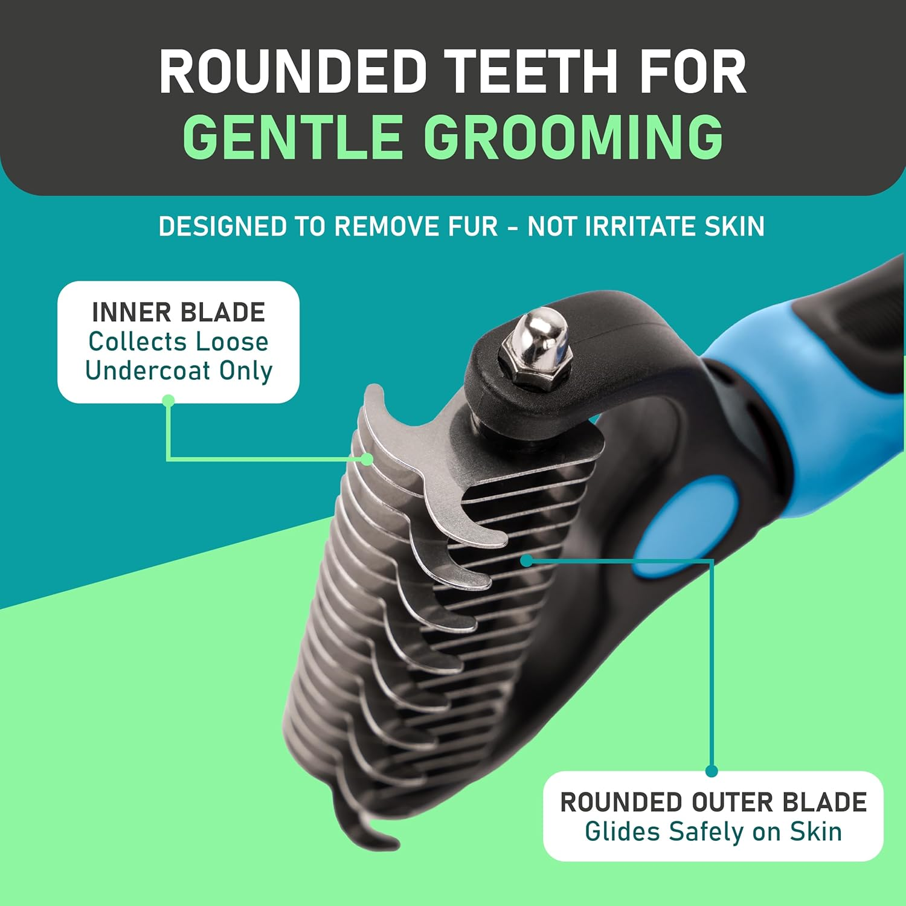
Maxpower Planet Pet Grooming Rake
A double-sided pet grooming rake designed for deshedding, dematting, and removing loose undercoat from dogs and cats.
A quick overview of what shoppers commonly expressed.
- Often liked for removing loose fur and undercoat
- Double-sided design helps with different grooming needs
- Good fit for pet owners managing shedding
- Best used gently and according to coat type
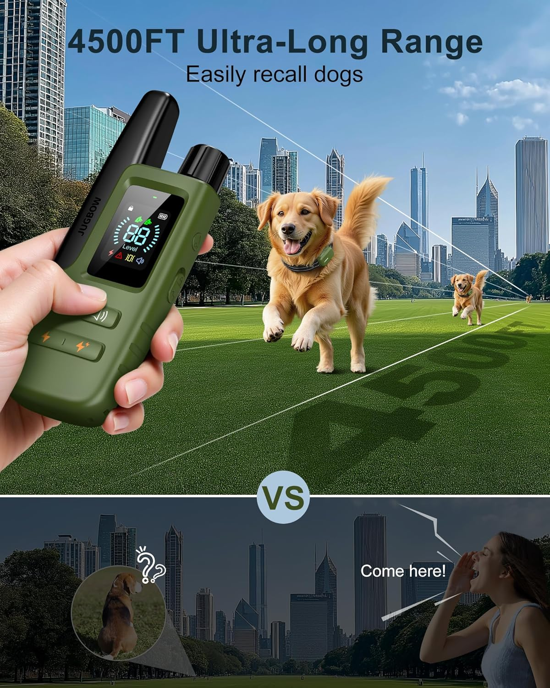
Jugbow Dog Training Collar
A rechargeable remote training collar designed to support basic obedience routines, recall practice, and outdoor training sessions.
A quick overview of what shoppers commonly expressed.
- Often liked for range and remote-control convenience
- Useful for structured training routines
- Rechargeable design helps with regular use
- Best used responsibly and according to pet temperament
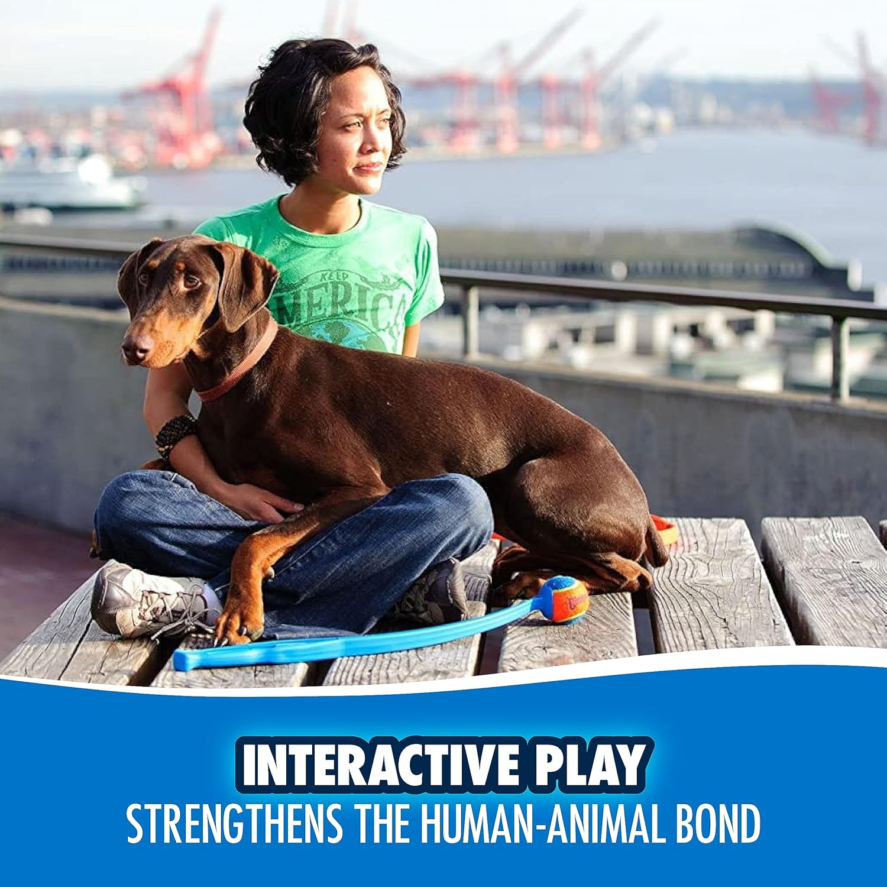
Chuckit! Sport Dog Ball Launcher
A classic dog ball launcher that helps throw farther with less effort during fetch, park trips, and outdoor play.
A quick overview of what shoppers commonly expressed.
- Often liked for longer, easier fetch throws
- Strong outdoor play value for active dogs
- Simple and instantly understandable product
- Great fit for dog owners who visit parks or yards
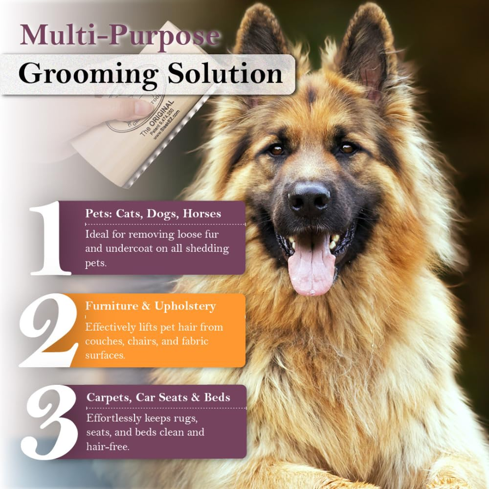
SleekEZ Dog Brush
A pet hair removal and grooming tool designed to help remove loose hair from coats, fabrics, furniture, and grooming surfaces.
A quick overview of what shoppers commonly expressed.
- Often liked for removing loose pet hair
- Useful across grooming and fabric cleanup
- Good fit for shedding-season routines
- Strong simple pick for dog and cat owners
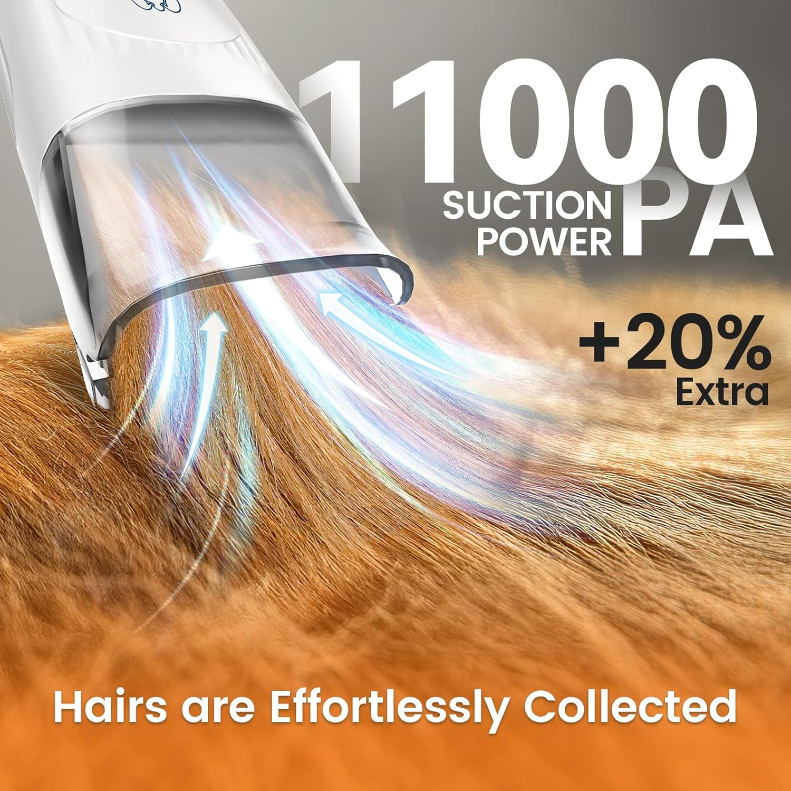
oneisall Dog Grooming Vacuum
A pet grooming vacuum kit with clipper and nail grinder tools to help reduce loose hair during at-home grooming sessions.
A quick overview of what shoppers commonly expressed.
- Often liked for reducing grooming mess at home
- Useful kit format with multiple pet grooming tools
- Good fit for dog owners who groom regularly
- Best for pets who can tolerate grooming noise
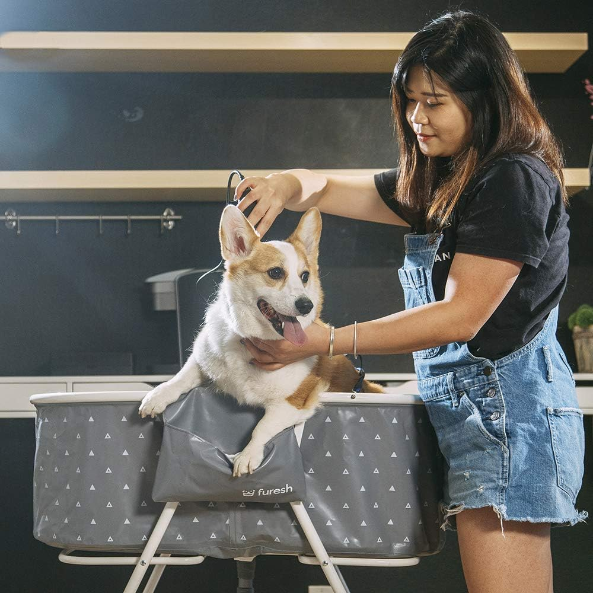
Furesh Little Dipper Dog Bath Tub
An elevated foldable pet bath tub and wash station made for easier bathing and grooming for small to medium pets.
A quick overview of what shoppers commonly expressed.
- Often liked for reducing bending during pet baths
- Foldable format helps with storage after use
- Useful for small and medium pet grooming routines
- Best for shoppers who check pet size and weight fit
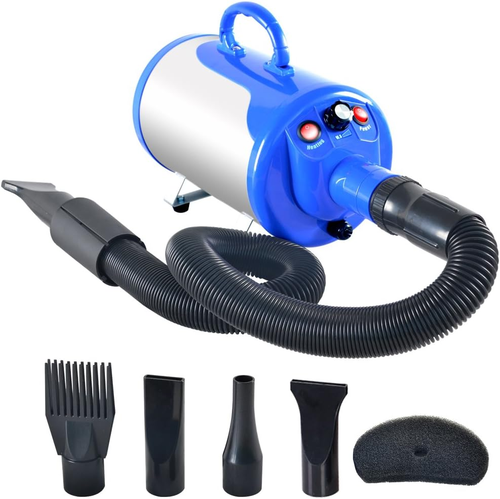
SHELANDY Pet Hair Force Dryer
A pet grooming dryer with adjustable airflow and heat settings for drying dogs and cats after baths or grooming sessions.
A quick overview of what shoppers commonly expressed.
- Often liked for faster post-bath drying
- Adjustable airflow can help with different coat types
- Good fit for at-home grooming routines
- Noise sensitivity should be considered for some pets
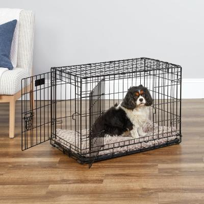
MidWest Homes iCrate Dog Crate
A folding double-door dog crate for medium breeds, crate training, travel setups, and safer pet resting spaces.
A quick overview of what shoppers commonly expressed.
- Often liked for sturdy crate training use
- Foldable design helps with storage and transport
- Good fit for medium-breed dogs
- Sizing should be checked carefully before buying

PetPivot Self Cleaning Cat Litter Box
An open-top automatic litter box designed to make cleanup easier while improving safety and everyday convenience for cat owners.
A quick overview of what shoppers commonly expressed.
- Often liked for easier setup and daily litter convenience
- Open-top design can be easier for many cats to accept
- Helpful for reducing daily scooping and odor hassle
- Some buyers may want to check reliability expectations
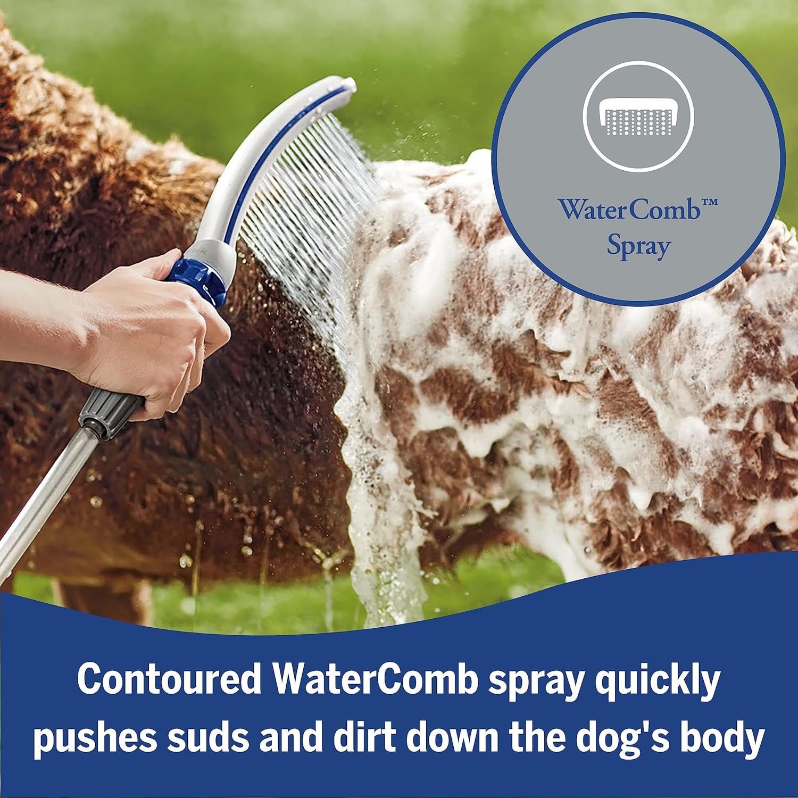
Waterpik Pet Wand Pro
A dog shower attachment designed to make rinsing and bathing pets easier with a wand-style sprayer and flexible hose setup.
A quick overview of what shoppers commonly expressed.
- Often liked for easier rinsing during dog baths
- Wand shape helps reach different coat areas
- Useful for indoor or shower-based pet bathing
- Installation fit should be checked before buying
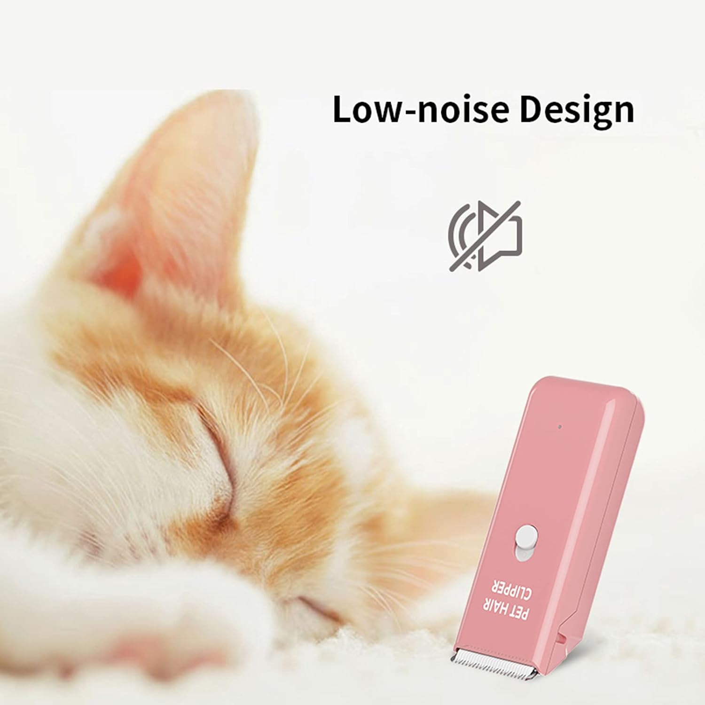
Waterproof Pet Grooming Clipper
A rechargeable waterproof grooming clipper for trimming pet hair around paws, face, ears, and small touch-up areas.
A quick overview of what shoppers commonly expressed.
- Often liked for small grooming touch-ups
- Rechargeable and compact for home use
- Useful around paws and detail areas
- Best used carefully with pet comfort in mind
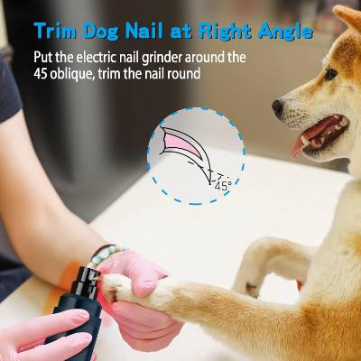
Casfuy Dog Nail Grinder
A two-speed pet nail grinder designed for smoother nail trimming sessions at home with less clipping stress.
A quick overview of what shoppers commonly expressed.
- Often liked for gentler nail maintenance
- Two-speed design helps match different pet sizes
- Useful for regular at-home grooming
- Best introduced slowly for nervous pets
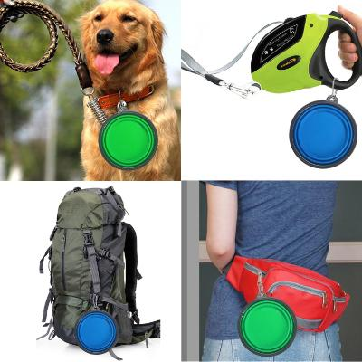
Comsun Collapsible Dog Bowls
A 2-pack of foldable travel bowls for pet food and water during walks, trips, hiking, and outdoor use.
A quick overview of what shoppers commonly expressed.
- Often liked for travel and outdoor pet routines
- Collapsible design saves bag space
- Useful for water, food, parks, and road trips
- Good simple pick for dog owners on the go
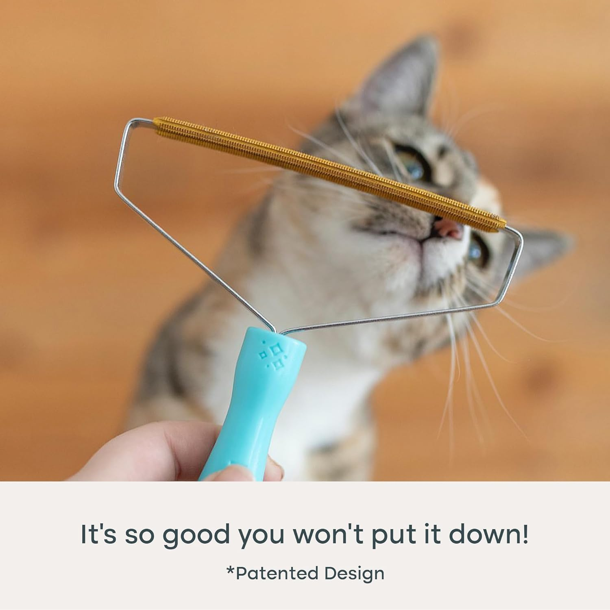
Uproot Cleaner Pro Pet Hair Remover
A reusable pet hair removal tool made for carpets, rugs, couches, car seats, and other fabric surfaces.
A quick overview of what shoppers commonly expressed.
- Often liked for pulling pet hair from fabrics
- Reusable design avoids sticky sheets
- Useful for couches, rugs, cars, and carpets
- Works best on suitable fabric surfaces
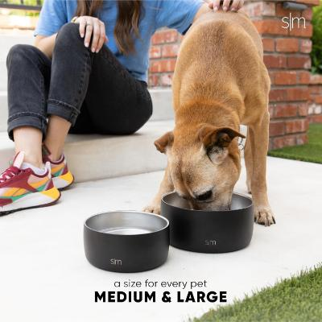
Simple Modern Stainless Steel Pet Water Bowl
A reusable insulated stainless steel pet bowl with a no-slip base for dogs and cats at home.
A quick overview of what shoppers commonly expressed.
- Often liked for sturdy stainless steel quality
- No-slip base helps reduce sliding and spills
- Modern look fits cleaner home setups
- Hand-wash guidance should be checked before buying
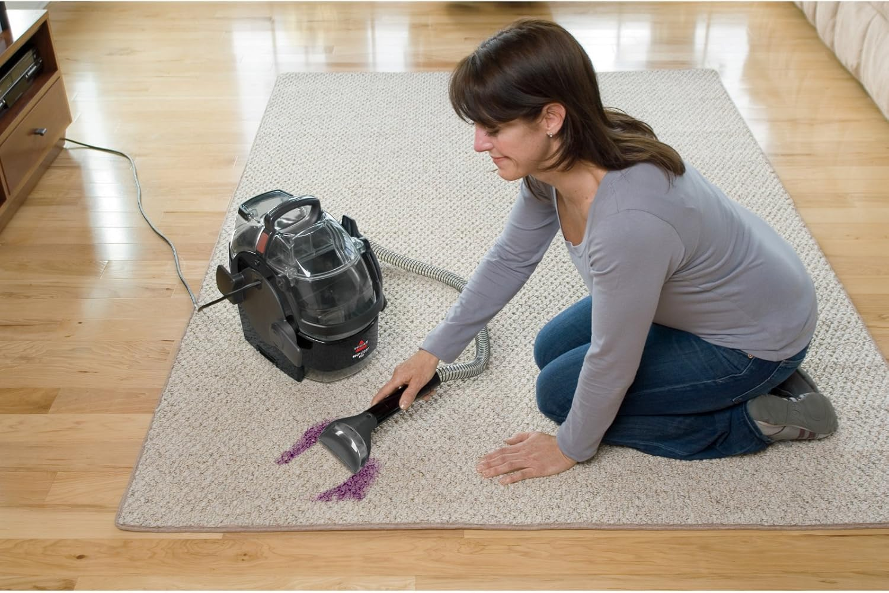
Bissell SpotClean Professional
A portable carpet and upholstery cleaner that can help handle pet messes, stains, stairs, rugs, and car interiors.
A quick overview of what shoppers commonly expressed.
- Useful for pet stains and upholstery cleaning
- Portable format helps with stairs and small areas
- Good fit for homes with pets and carpets
- Best for shoppers who want deeper spot cleaning
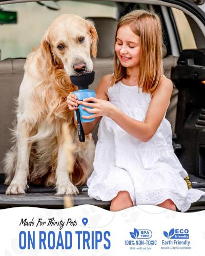
lesotc Dog Water Bottle
A portable dog water bottle with a built-in bowl for walks, hikes, road trips, and outdoor pet hydration.
A quick overview of what shoppers commonly expressed.
- Often liked for outdoor walks and travel
- Built-in bowl makes drinking easier on the go
- Useful for parks, hikes, and car rides
- Best for pet owners who carry water regularly
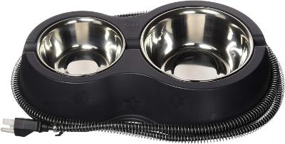
K&H Heated Cat Food & Water Bowl
A heated stainless pet bowl made for outdoor cats or pets that need help keeping food or water from freezing in cold weather.
A quick overview of what shoppers commonly expressed.
- Useful seasonal pick for cold weather
- Good for outdoor cat and pet feeding setups
- Stainless bowl design is practical for regular use
- Best for shoppers who need winter pet support
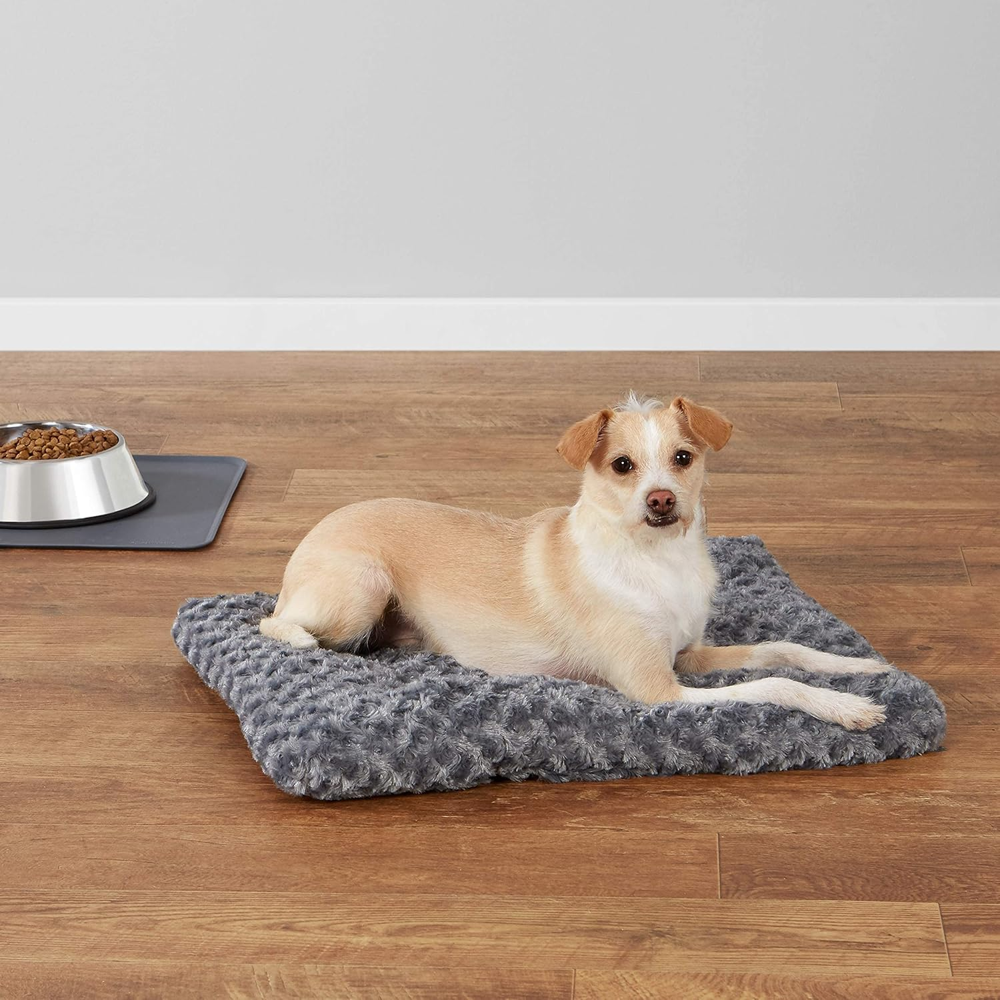
Amazon Basics Pet Bed / Crate Pad
A washable pet bed and crate pad designed for everyday comfort in crates, carriers, small rooms, and pet resting spots.
A quick overview of what shoppers commonly expressed.
- Practical everyday bed or crate pad
- Washable design helps with regular pet use
- Good fit for crates, carriers, and cozy corners
- Size choice matters for best comfort
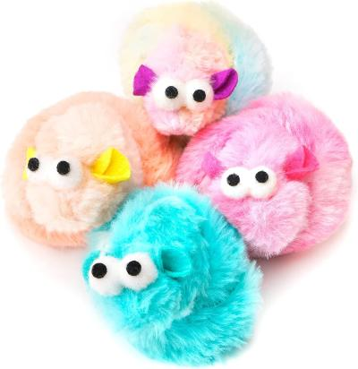
CHIWAVA Plush Cat Toys
A pack of long plush cat toys with bell and rustle sounds designed for batting, chasing, pouncing, and indoor play.
A quick overview of what shoppers commonly expressed.
- Good fit for active indoor cats
- Bell and rustle sounds add play interest
- Useful multi-pack for toy rotation
- Toy preferences can vary by cat

ChomChom Roller Pet Hair Remover
A reusable pet hair remover designed for couches, bedding, and other fabric surfaces without relying on disposable sticky sheets.
A quick overview of what shoppers commonly expressed.
- Often liked for quick furniture and fabric cleanup
- Reusable design avoids disposable sticky sheets
- Very easy product for pet owners to understand
- Works best on fabric surfaces, not every material type

OhGeni Orthopedic Dog Bed
An orthopedic foam dog bed with a washable cover designed to improve comfort and support for everyday rest.
A quick overview of what shoppers commonly expressed.
- Often liked for dog comfort and daily support
- Washable cover is useful for everyday pet life
- Good broad appeal for dog owners
- Size choice matters, so buyers should pick carefully
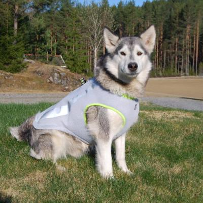
SGODA Dog Cooling Vest
A cooling vest harness for dogs designed for warm-weather walks, outdoor use, and summer comfort routines.
A quick overview of what shoppers commonly expressed.
- Useful seasonal pick for warm-weather outings
- Designed to help dogs stay more comfortable in heat
- Good fit for walks, hiking, and outdoor routines
- Placed lower because feedback is more mixed
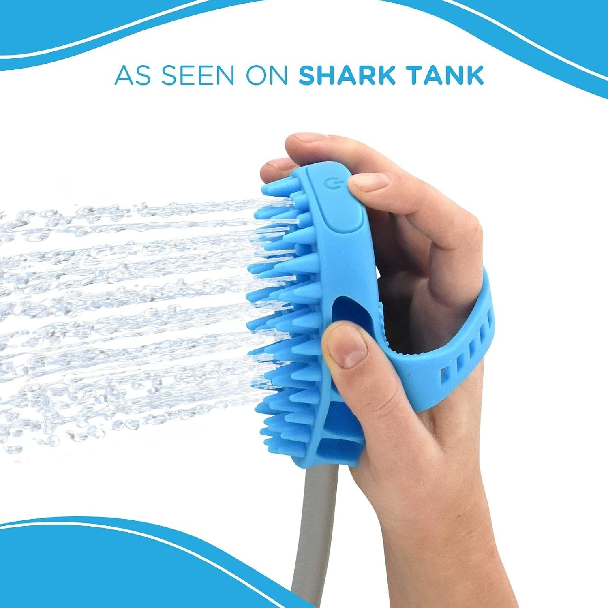
Aquapaw Dog Bath Brush Pro
A silicone dog bath brush and shower attachment made to combine scrubbing and rinsing during bath time.
A quick overview of what shoppers commonly expressed.
- Useful for combined rinsing and scrubbing
- Good concept for bath-time grooming
- Works best when the attachment fit is right
- Placed lower because feedback is weaker than top pet picks

Purina Tidy Cats Cat Litter
An unscented clumping cat litter made for multi-cat homes with low-dust performance and odor control.
A quick overview of what shoppers commonly expressed.
- Useful for clumping and odor-control routines
- Unscented option can suit sensitive households
- Helpful addition to the cat-focused side of the section
- Not the strongest-rated product in the group
Why These Pet Picks?
This page brings together practical pet supplies with clear everyday use cases, including dog grooming, shedding control, pet cleaning, hydration, bath time, crate comfort, outdoor play, travel support, heated feeding, and indoor cat toys.
Product details, prices, ratings, and availability can change on Amazon. Always check the final Amazon product page before making a purchase.